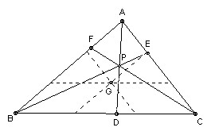

IMO 1961

Problem B1
P is inside the triangle ABC. PA intersects BC in D, PB intersects AC in E, and PC intersects AB in F. Prove that at least one of AP/PD, BP/PE, CP/PF does not exceed 2, and at least one is not less than 2.
Solution

Take lines through the centroid parallel to the sides of the triangle. The result is then obvious.

Solutions are also available in: Samuel L Greitzer, International Mathematical Olympiads 1959-1977, MAA 1978, and in István Reiman, International Mathematical Olympiad 1959-1999, ISBN 189-8855-48-X.
3rd IMO 1961
© John Scholes
jscholes@kalva.demon.co.uk
19 Sep 1998
Last corrected/updated 24 Sep 2003